Configurer la section Propriétés
Dans cette section, vous indiquez les propriétés principales du profil Web :
-
Identifiant : saisissez l'identifiant du profil web. Il peut être composé de lettres, de chiffres et du caractère '_' pour un maximum de 64 caractères. Cet identifiant n'est affiché que dans les interfaces d'administration.
-
Nom : saisissez le nom du profil Web. Ce nom, explicite, n'est affiché que dans les interfaces d'administration.
-
Titre : saisissez le titre du profil Web qui s'affiche dans l'interface dédiée à l'utilisateur.
-
Message : si nécessaire, saisissez un message, affiché dans la page d'accueil de l'interface de déblocage (lors d'une identification par formulaire). Ce message peut -être destiné à aider l'utilisateur, par exemple.
-
Identification : définissez le mode selon lequel l'utilisateur s'identifie (ou non) dans l'interface
-
Anonyme : ce mode permet d'utiliser Watchdoc sans avoir à s'authentifier ;
-
Formulaire (Login + MdP) : ce mode permet d'afficher dans le site web un formulaire dans lequel les utilisateurs s'authentifient à l'aide de leur identifiant et mot de passe) ;
Ce mode peut être utile pour résoudre des problèmes de compatibilités SSO depuis certains navigateurs (cf. Problème d'authentification à Watchdoc depuis Safari ou Firefox).
-
Intégrée Windows : ce mode permet d'identifier les utilisateurs dans Watchdoc® par transfert automatique de leur identifiant MS Windows ;
-
Station : ce mode permet d'identifier l'ordinateur depuis lequel est lancé le travail d'impression ;
-
Station avec connexion automatique : ce mode permet d'identifier l'ordinateur depuis lequel est lancé le travail d'impression ;
-
Code secret : ce mode permet d'afficher dans le site web une pop-up dans laquelle l'utilisateur saisit un code secret qu'il réutilise au moment de débloquer ses impressions. Conservé pour raison de compatibilité ascendante, ce paramètres n'est plus utilisé ;
-
SSO : ce mode permet d'identifier les utilisateurs dans Watchdoc par transfert automatique de leur identifiant déjà saisi dans une autre application. Dans le cas où vous optez pour ce mode d'authentification, sélectionnez le protocole SSO avec lequel Watchdoc doit interopérer, puis complétez les paramètres permettant l'interopérabilité (généralement fournis par l'administrateur réseau) :
- URL de login : saisissez l'url du protocole SSO utilisé pour transférer le login ;
- URL de validation : saisissez l'url du protocole SSO utilisé pour la validation de l'authentification ;
- Nom du paramètre de service : saisissez l'url du paramètre du protocole ;
- Nom du paramètre de ticket : saisissez l'url du paramètre du ticket du protocole ;
-
Externe : ce mode permet d'identifier les utilisateurs qui se connectent à Watchdoc à l'aide d'un annuaire externe (tel que Entra ID, par exemple) ;
-
-
Langue : dans la liste, sélectionnez la langue dans laquelle doit être affichée l'interface :
-
Code de langue : permet d'afficher l'interface dans la langue sélectionnée ;
-
Détection automatique : permet d'afficher l'interface dans la langue définie dans le système d'exploitation du poste de l'utilisateur ;
-
Utiliser la langue par défaut : permet d'afficher l'interface dans la langue définie par l'administrateur lors de l'installation de Watchdoc ;
-
-
Mon compte : cochez la case si vous souhaitez que l'interface ne comporte qu'un accès au compte de l'utilisateur.
Lorsque la case Mon Compte est cochée, les sections Paiement, Accès aux détails d'une impression, Accès aux informations d'une file d'impression et Autoriser le rechargement des comptes sont désactivées.
-
Annuaire de cartes : sélectionnez dans la liste l'annuaire dans lequel sont référencés les badges des utilisateurs se connectant au profil web.
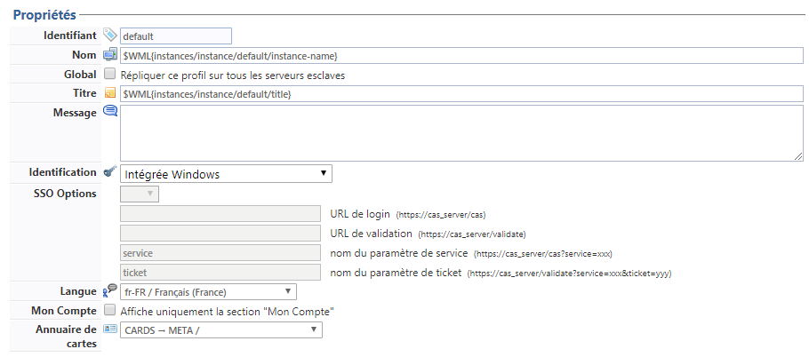
Configurer la section Paiement
Dans cette section, vous indiquez les modalités de paiement des impressions que les utilisateurs débloquent à partir du site web :
-
Mode : dans la liste, sélectionnez le mode de paiement des impressions :
-
Gratuit : ce mode permet aux utilisateurs d'imprimer gratuitement ;
-
Carte : ce mode permet aux utilisateurs de payer leurs impressions à l'aide d'une carte dans laquelle est enregistré le crédit dont dispose l'utilisateur. Si vous optez pour ce mode, précisez ensuite :
- Lecteur carte : précisez la marque du lecteur de carte utilisé pour la transaction ;
- Paramètres : précisez, si nécessaire, les paramètres permettant à Watchdoc d'interopérer avec le lecteur (numéro du port ou vitesse de lecture, par exemple) ;
- Demander la carte pour les transations gratuites : cochez la case si l'utilisateur doit présenter sa carte même pour les impressions gratuites. Cette fonction peut être utile pour les statistiques d'utilisation.
- Libération des travaux à l'éjection de la carte : cochez la case si les travaux doivent être imprimés une fois la carte éjectée du lecteur. Cette fonction aide l'utilisateur à ne pas oublier sa carte dans le lecteur.
-
Quota: ce mode permet aux utilisateurs de payer leurs impressions à l'aide d'un quota prédéfini dans lequel est enregistré le crédit dont dispose l'utilisateur ;
-
Quota (avec table de ventilation par format) : ce mode permet aux utilisateurs de payer leurs impressions à l'aide de plusieurs quotas définis en fonction des différents formats possibles.
Pour payer à l'aide d'un quota, l'utilisateur doit être authentifié dans le site Web de Watchdoc ;
-
Quota + Carte : ce mode permet aux utilisateurs de payer leurs impressions soit à l'aide d'une carte, soit à l'aide d'un quota prédéfini dans lesquels est enregistré le crédit dont dispose l'utilisateur. Si vous optez pour ce mode, précisez ;
- Lecteur carte : sélectionnez dans la liste le modèle du lecteur de carte utilisé pour le paiement ;
- Paramètres : saisissez dans ce champ les paramètres liés à l'utilisation du lecteur de cartes, comme le port et la vitesse de lecture, par exemple ;
- Demander la carte pour les transactions gratuites : cochez cette case pour obliger l'utilisateur à présenter sa carte, même lorsque l'impression est gratuite (à des fins de traitement statistique) ;
- Libération des travaux à l'éjection de la carte : cochez cette case pour faire en sorte que la carte ne soit rendue à l'utilisateur qu'après impression (utile pour débiter la carte après impression effective) ;
-
Externe : ce mode nécessite l'intervention d'un opérateur de paiement externe (tels que PayBox®, Moneo®, Cartadix®), chargé de créditer un compte dédié aux impressions de l'utilisateur.
Les choix Carte, Quotaet Quota + Carte s'affichent lorsque des quotas ont été préalablement configurés.
-
Comptes : cochez le bouton radio correspondant au(x) quota(s) mis à disposition des utilisateurs :
-
Tous les quotas seront utilisables dans ce profil : cochez cette case pour mettre à disposition des utilisateurs tous les quotas disponibles ;
-
Les quotas suivants seront utilisables dans ce profil : cochez cette case puis sélectionnez les quotas afficher si vous souhaitez restreindre les quotas débités ;
-
Paiement : cochez la case si vous souhaitez que le compte de l'utilisateur soit débité lors de l'impression effective des travaux et non lors de leur déblocage, afin d'éviter le paiement alors qu'un dysfonctionnement entre le spooler et le périphérique empêcherait l'impression.
Activer le paiement sur le périphérique nécessite d'avoir configuré la comptabilisation sur le profil WES correspondant.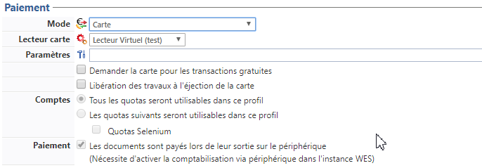
Configurer la section Interface Utilisateur
En tant qu'administrateur, vous précisez dans cette section les onglets et fonctions que vous mettez à disposition des utilisateurs dans leur page "Mon compte" :
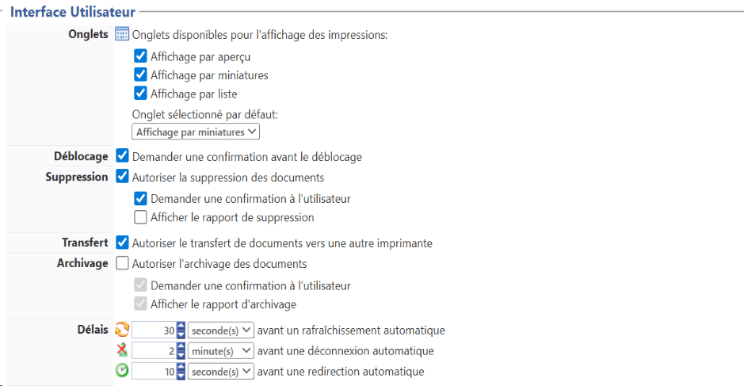
-
Onglets : cochez les cases correspondant aux onglets de l'interface que vous mettez à disposition des utilisateurs, puis sélectionnez dans la liste l'onglet affiché par défaut lorsque l'utilisateur accède à sa page "Mon compte" ;
-
par aperçu : interface dans la quelle le document à imprimer est présenté, page par page, des outils de pagination permettant de le parcourir entièrement :
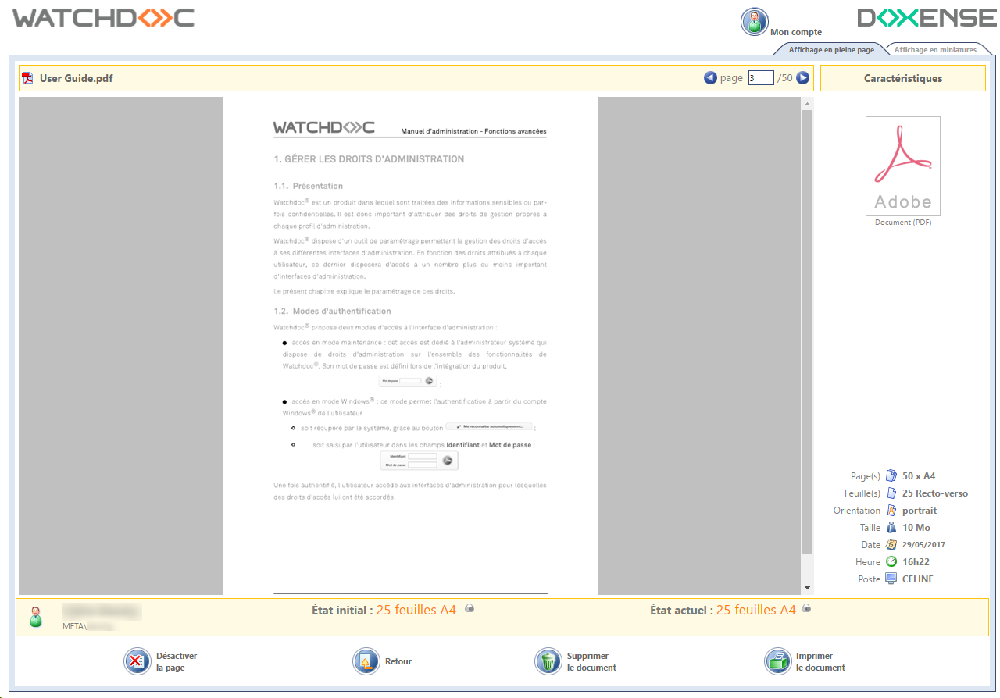
-
par miniature : interface dans la quelle le document à imprimer est présenté, sous forme de miniatures, avec des outils de pagination permettant de le parcourir entièrement :
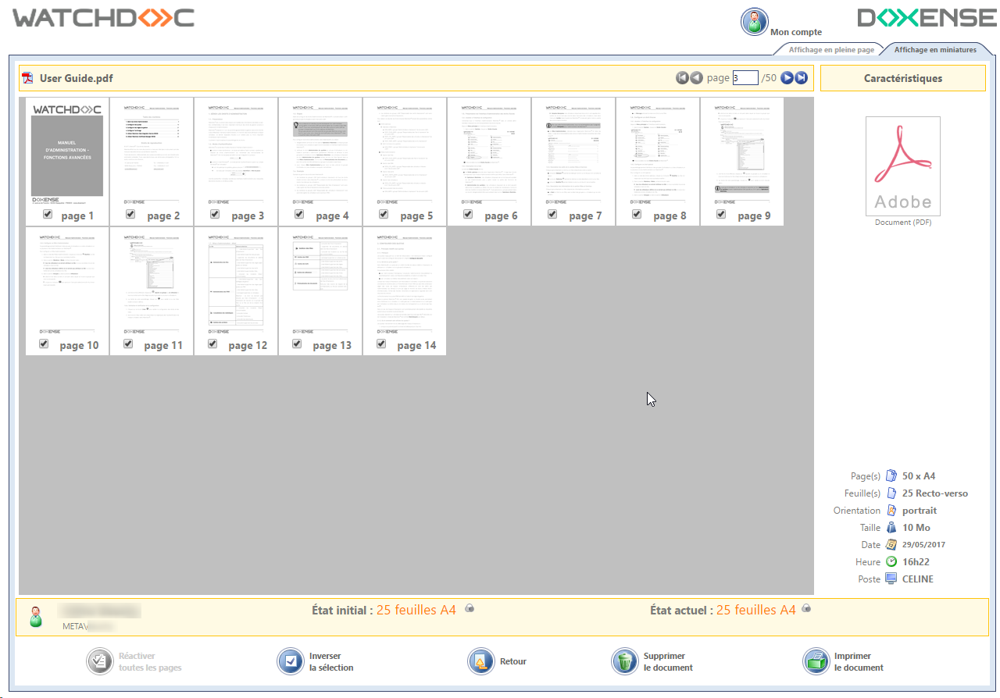
-
par liste : interface dans la quelle les documents à imprimer sont présentés sous forme de liste. Un lien permet d'accéder à l'affichage détaillé de chaque document :
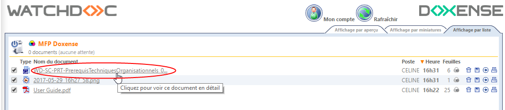
-
-
Déblocage - demander une confirmation avant le déblocage : lorsqu'aucun paiement n'est attendu pour l'impression (Paiement = mode Gratuit), précisez si le document est automatiquement imprimé après demande d'impression ou si l'utilisateur doit confirmer son impression en la débloquant explicitement.
-
Suppression - autoriser la suppression des documents : cochez la case si vous souhaitez que l'utilisateur puisse supprimer les travaux d'impression demandés, puis précisez :
-
Demander une confirmation à l'utilisateur : cochez cette case si l'utilisateur doit confirmer sa demande pour qu'elle soit exécutée ;
-
Afficher le rapport de suppression : cochez cette case si un rapport de suppression doit être affiché à l'utilisateur ;
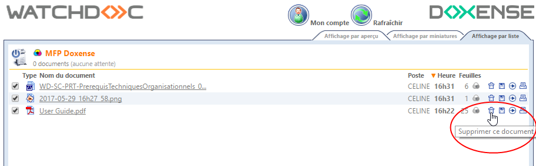
-
- Archivage - autoriser l'archivage des documents : cochez la case si vous souhaitez que l'utilisateur puisse archiver les travaux d'impression demandés, puis précisez :
Demander une confirmation à l'utilisateur : cochez cette case si l'utilisateur doit confirmer sa demande pour qu'elle soit exécutée ;
Afficher le rapport de suppression : cochez cette case si un rapport d'archivage doit être affiché à l'utilisateur.
-
Délais : indiquez, en secondes, minutes ou heures, les délais au-delà desquels, si Watchdoc ne détecte aucun mouvement de souris de la part de l'utilisateur, il :
-
rafraîchit les pages qui ne nécessitent aucune authentification ;
-
déconnecte l'utilisateur lorsqu'il se trouve sur une page nécessiatant authentification ;
-
redirige automatiquement l'utilisateur de la page qui affiche les informations de déblocage des documents vers la page listant les documents en attente.
-
Configurer la section Files visibles
-
Files : dans cette section, indiquez les files d'impression que vous souhaitez activer dans le profil web :
-
Toutes les files sont visibles par cette instance : cochez cette case pour permettre à l'instance web d'exploiter toutes les files paramétrées dans l'outil Watchdoc.
-
Les files suivantes seront visibles par le profil : cochez cette case si vous souhaitez ne mettre que quelques files à disposition des utilisateurs. Sélectionnez ensuite les files mises à disposition dans la liste affichée en-dessous.
-
Redirection par défaut : dans cette section, indiquez les modalités de la rediction des travaux d'impression. La redirection permet d'envoyer les travaux d'impression vers une autre file que la file initialement configurée. La redirection est utile dans le cas où la file configurée est défaillante. Elle permet aussi à l'utilisateur de débloquer ses travaux enregistrés sur une file virtuelle sans avoir à se déplacer jusqu'au périphérique d'impression.
Dans la liste des files, sélectionnez la file vers laquelle vous souhaitez que les impressions soient redirigées ;
-
Forcer la redirection vers la cible : cochez cette case si vous souhaitez renvoyer obligatoirement les travaux d'impression demandés.
Cette fonction est notamment utile dans le cas où, en maintenance, le périphérique doit continuer de fonctionner pour permettre des tests, mais ne doit plus recevoir les travaux d'impression qui sont alors dirigés vers un périphérique opérationnel.
-
Désactiver le bouton d'impression directe : cochez cette case dans le cas où les travaux sont stockés dans une file virtuelle avant d'être envoyés vers le périphérique d'impression désigné par l'utilisateur.
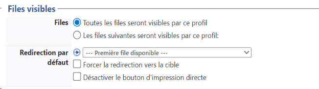
Autoriser l'accès aux détails d'une impression
Par défaut, les demandes d'impression sont affichées dans une liste, classées par ordre antechronologique ou chronologique.
-
Cochez cette case pour fournir aux utilisateurs d'autres interfaces de consultation des travaux d'impression demandés.
-
Onglets : indiquez les onglets supplémentaires mis à disposition des utilisateurs, puis précisez quel est celui qui doit être affiché par défaut :
-
affichage en pleine page : cochez cette case pour activer l'interface dans laquelle les documents sont affichés page par page avec leurs caractéristiques et dotée d'un outil de pagination :
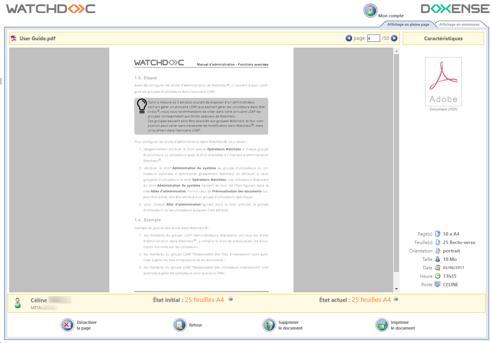
-
affichage en miniatures : si vous avez activé l'affichage en miniatures, précisez le nombre de miniatures affichées dans l'onglet :
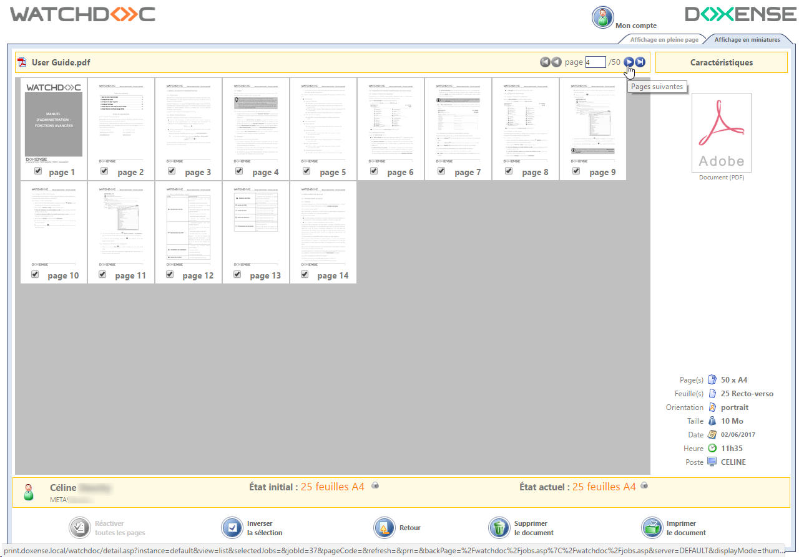
-
Fonctionnalités : indiquez les fonctionnalités mises à disposition dans les onglets (affichées sous forme de boutons) :
-
Autoriser la suppression de pages : cochez cette case pour permettre à l'utilisateur de supprimer des pages du travail d'impression demandé :
n'importe quelles pages : cochez cette case pour que l'utilisateur puisse supprimer n'importes quelles pages du documents, où qu'elles se trouvent ;
- uniquement les dernières pages : cochez cette case pour que l'utilisateur ne puisse supprimer que la dernière page du travail demandé.
-
Confirmation : cochez cette case pour demander une confirmation à l'utilisateur avant toute opération sur ses demandes d'impression :
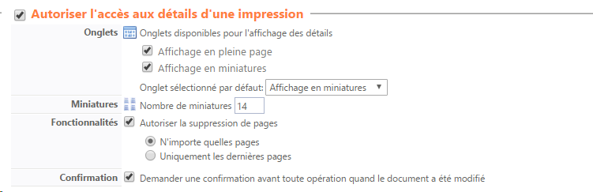
Autoriser l'accès à la page Mon Compte
La page Mon Compte permet à l'utilisateur d'accéder à ses informations personnelles. Elle peut comporter plus ou moins d'onglets en fonction de sa configuration.
-
Autoriser l'accès à la page Mon Compte : cochez la case pour mettre la page à disposition des utilisateurs et précisez quels sont les onglets à y afficher :
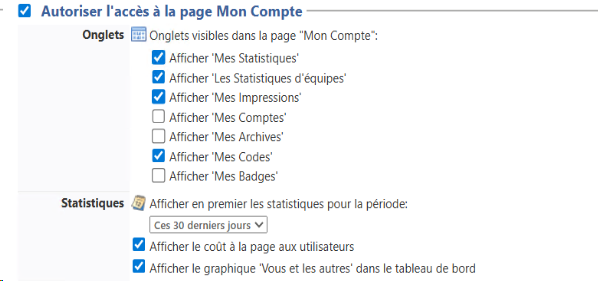
-
Onglet Mes statistiques : permet à l'utilisateur d'accéder à une synthèse de son utilisation ainsi qu'à l'impact environnemental de son activité d'impression d'une période choisie.
-
Onglet Les statistiques d'équipes : permet à l'utilisateur d'accéder à une synthèse de l'utilisation ainsi qu'à l'impact environnemental de l'activité d'impression de son équipe durant une période choisie.
Précisez ensuite dans la section Statistiques :
-
la période pour laquelle vous souhaitez afficher les statistiques ;
-
si vous souhaitez afficher le coût à la page aux utilisateurs ;
-
si vous souhaitez afficher la section Vous et les autres permettant de tcomparer l'activité d'impression de l'utilisateur à celle de tous les autres utilisateurs de Watchdoc.
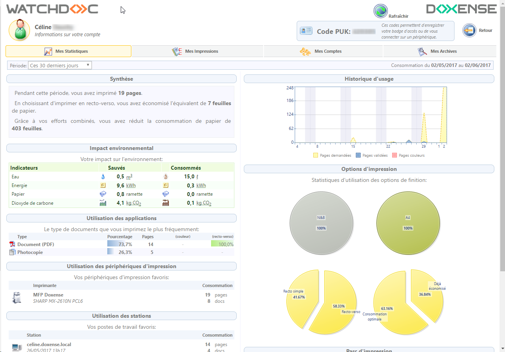
-
-
Onglet Mes impressions : permet à l'utilisateur d'accéder à l'historique de ses 50 derniers travaux (impression, numérisations, photocopies et fax).
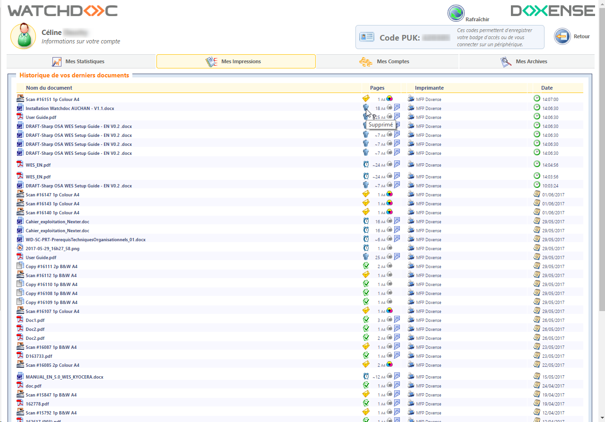
-
Onglet Mes comptes : permet à l'utilisateur d'accéder à la synthèse de son (ou ses) compte(s) et de son solde, dans le cas où les impressions sont soumises à quotas :
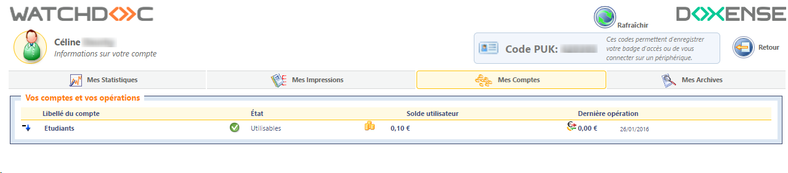
-
Onglet Mes Archives: permet à l'utilisateur d'accéder aux travaux d'impression qui ont été archivés :
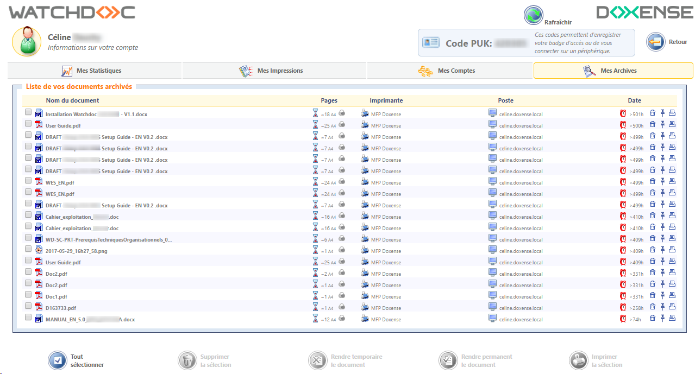
Autoriser l'accès aux informations d'une file d'impression
-
Cochez cette case pour permettre à l'utilisateur d'accéder aux informations relatives aux files d'impressions mises à sa disposition. L'utilisateur peut cliquer sur le nom de l'imprimante pour accéderà la page Etat de l'imprimante :
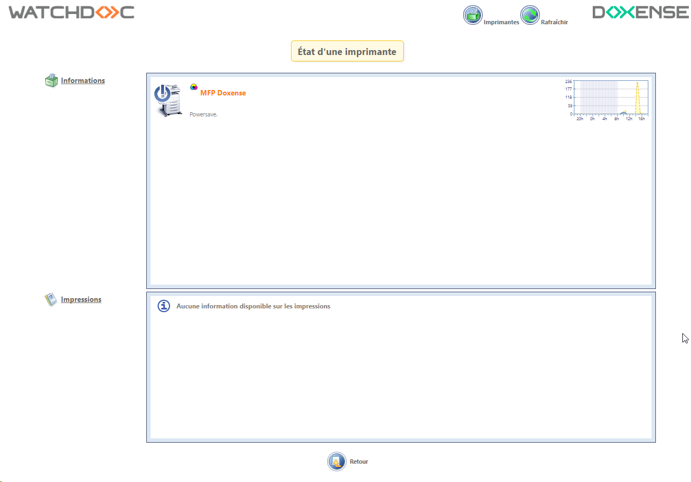
-
Afficher le graphe sur l'activité journalière : cochez cette case pour que l'utilisateur puisse visualiser sous forme graphique l'activité de l'imprimante ;
-
Afficher les colonnes suivantes pour chaque document : cochez les cases des informations des files que vous souhaitez afficher aux utilisateurs :
-
type des documents
-
titre des documents
-
nombre de pages des documents
-
date de demande d'impression
-
identité du demandeur de l'impression
-
temps d'attente estimé avant impression.
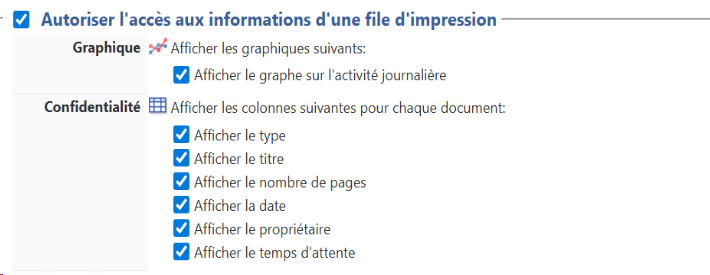
Autoriser le rechargement des quotas
Lorsque l'impression est soumise à paiement, cochez cette case pour permettre le rechargement du compte depuis l'interface utilisateur :
-
En fonction du mode de rechargement choisi (Débit ou Crédit), sélectionnez dans la liste le support qui doit être débité ou crédité et sélectionnez le quota utilisé pour cela. Si aucun compte n'est sélectionné par défaut pour le débit comme pour le crédit, l'utilisateur peut choisir parmi ses comptes disponibles dans l'interface.
-
Lecteur carte : si les supports utilisés sont des cartes, sélectionnez dans la liste le modèle de lecteur de carte utilisé :
-
Paramètres : précisez les paramètres au lecteur de carte connecté à la station de déblocage. Chaque modèle de lecteur utilise des paramètres spécifiques. Exemple: "port=1;speed=9600" indique au lecteur d'utiliser le port COM 1, et une vitesse de 9600 bauds.
-
Paramètres PayBox : si les supports fonctionnent avec la solution PayBox®, précisez les montants mis à disposition des utilisateurs pour recharger leur quota.
Ces montants, exprimés en centimes, ne doivent comporter ni virgule ni point (par exemple, 100 cents pour 1 euro).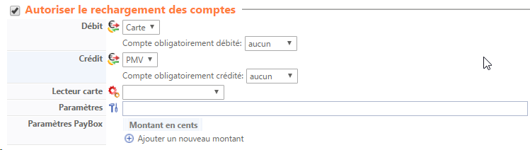